rubrica
Guia de uso do logo. O símbolo é um r caligráfico atravessado por um floreio em terracota: a rubrica, o traço que só você faz. Rubrica vem do latim “terra vermelha”, a tinta das iniciais nos manuscritos; por isso o floreio é terracota.
1 · Versões
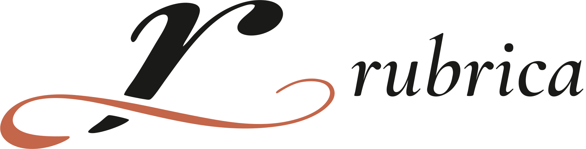
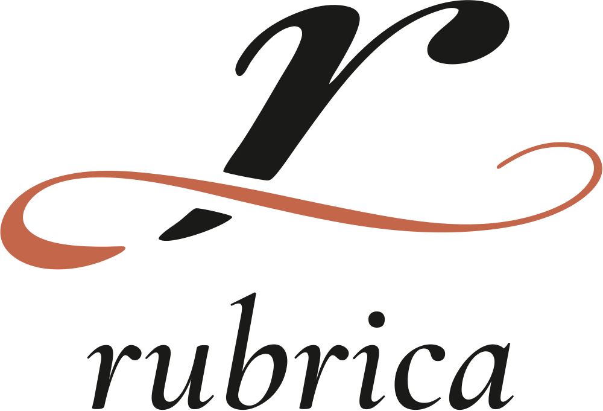
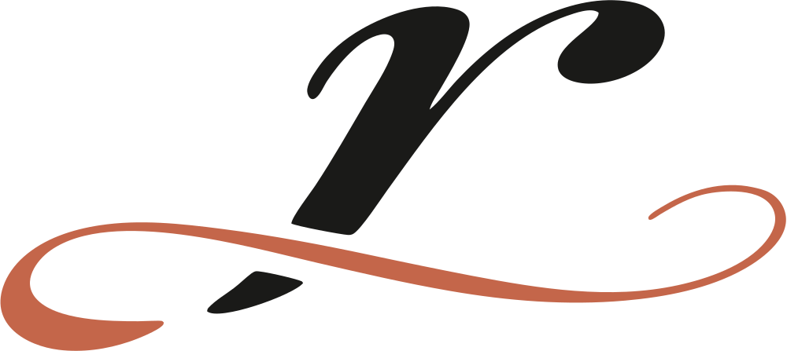
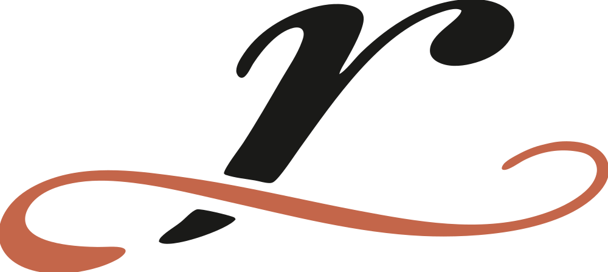
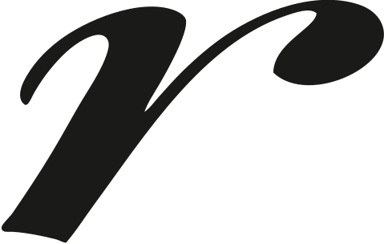
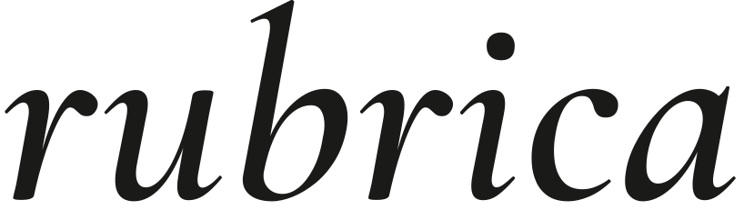
2 · Cores da marca
Tinta#1A1A18
RGB 26 26 24
CMYK 0 0 8 90
Terracota#C4664A
RGB 196 102 74
CMYK 0 48 62 23
Pantone: sugestão 7618 C, confirmar com a gráfica
Papel#F5F2EA
RGB 245 242 234
CMYK 0 1 4 4
Sálvia (apoio)#4D7C5F
RGB 77 124 95
Só na interface, nunca no logo.
3 · Positivo, negativo e uma cor
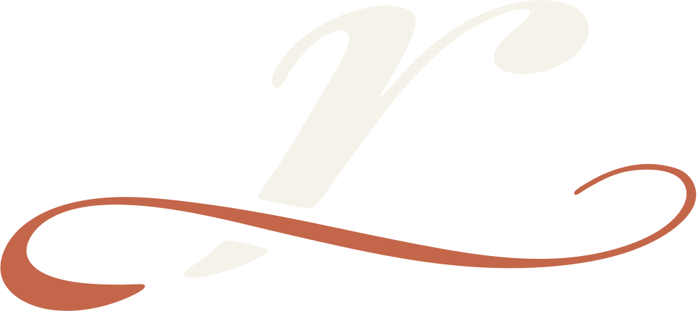
4 · Área de proteção
Deixe livre em volta do logo uma distância x igual à altura da gota do r (cerca de ¼ da altura do símbolo). A área cresce junto com o logo.
5 · Tamanhos mínimos
| Versão | Tela | Impressão |
|---|---|---|
| Horizontal | 200 px de largura | 40 mm |
| Símbolo | 160 px de largura | 35 mm |
| Símbolo reduzido | 64 a 160 px | 15 a 35 mm |
| Monograma / favicon | abaixo de 64 px (até 16 px) | abaixo de 15 mm |
6 · Ícones
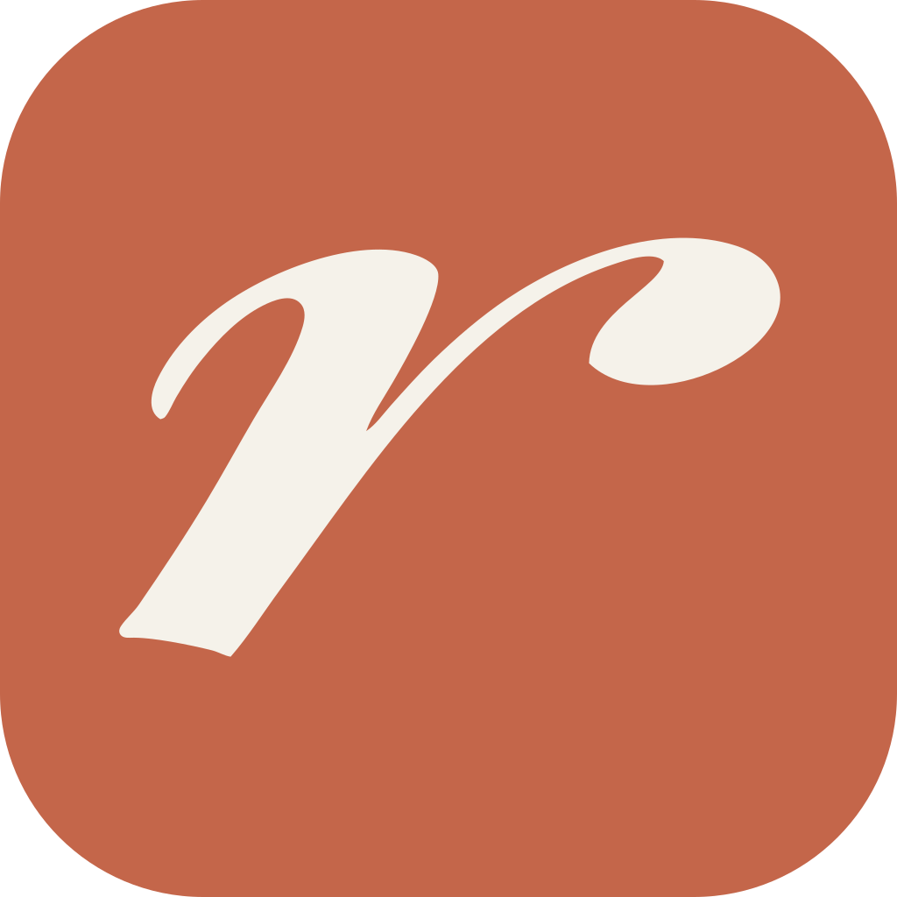
logo/web/.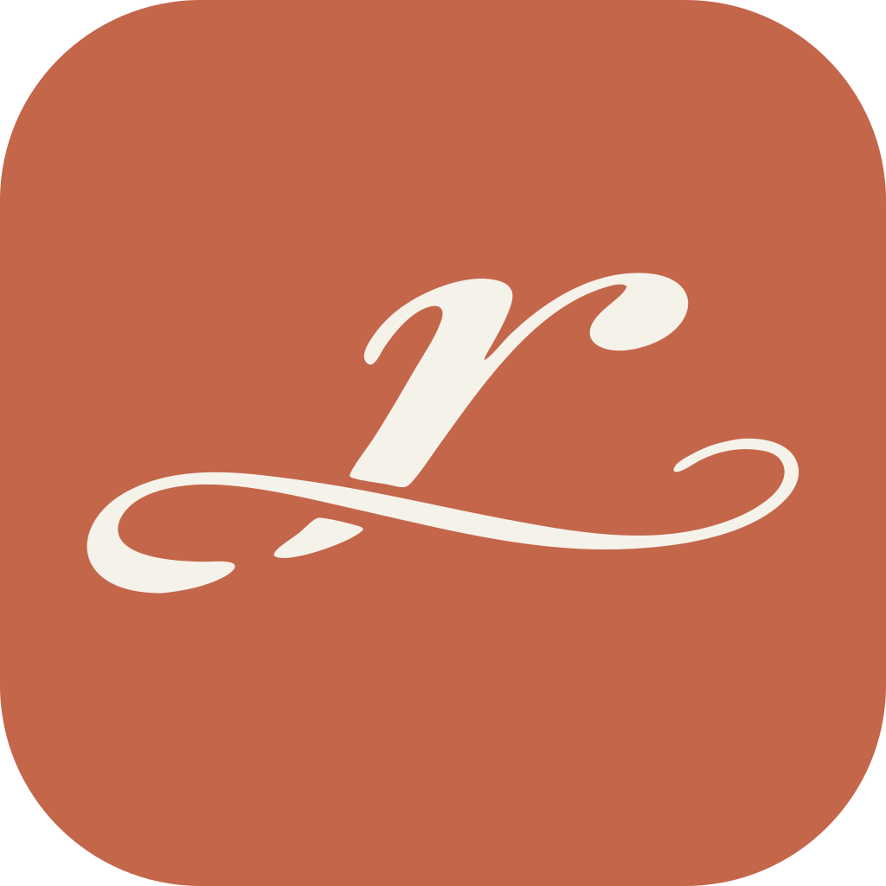
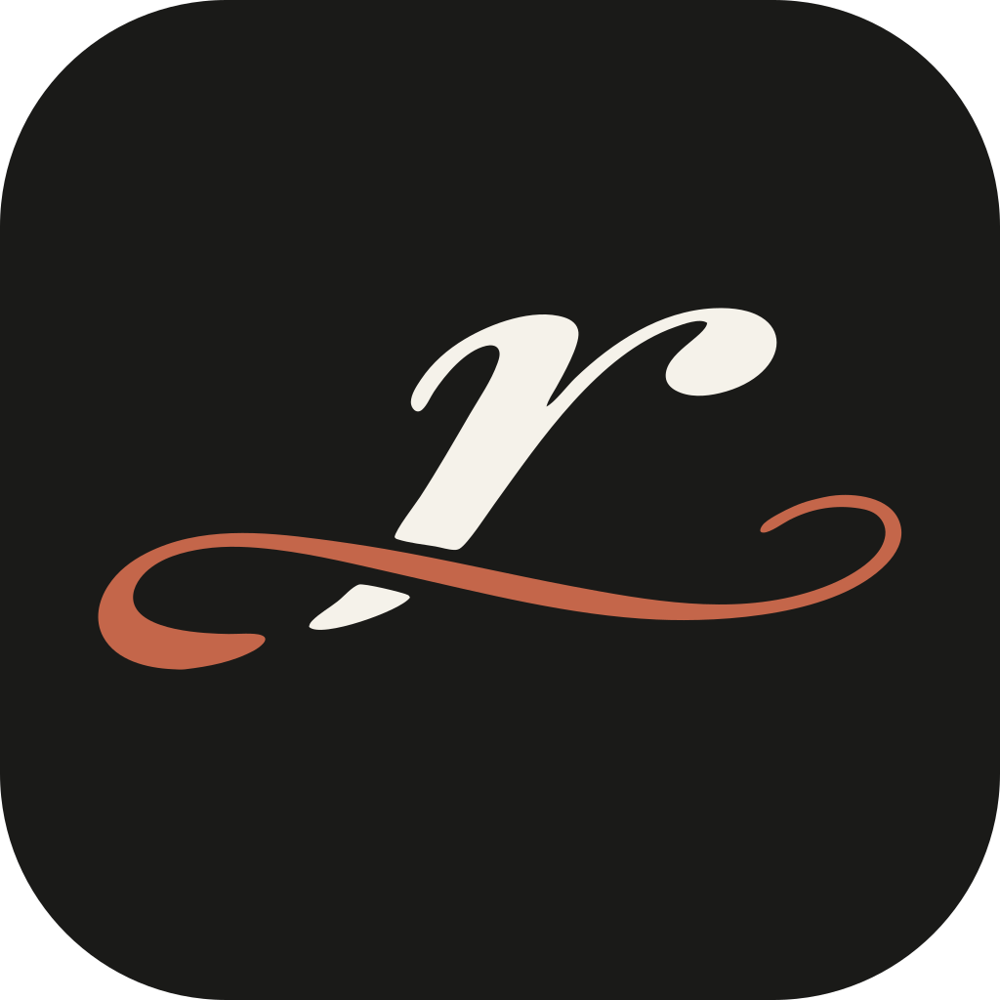
7 · Tipografia do nome
O nome usa Cormorant Garamond Italic SemiBold (licença SIL OFL, livre para uso em logo), convertido em contornos. Nos arquivos não há texto digitável: use sempre os SVGs.
8 · Não faça
- Não estique, achate, gire ou incline o logo.
- Não troque as cores fora das combinações da seção 3. O floreio é sempre terracota ou a mesma cor do r.
- Não separe o floreio do r nem mude a posição entre símbolo e nome.
- Não adicione sombra, contorno, brilho ou degradê.
- Não use o símbolo completo abaixo de 160 px: troque pelo reduzido ou pelo monograma.
- Não aplique sobre fundos agitados sem um bloco de cor por trás.